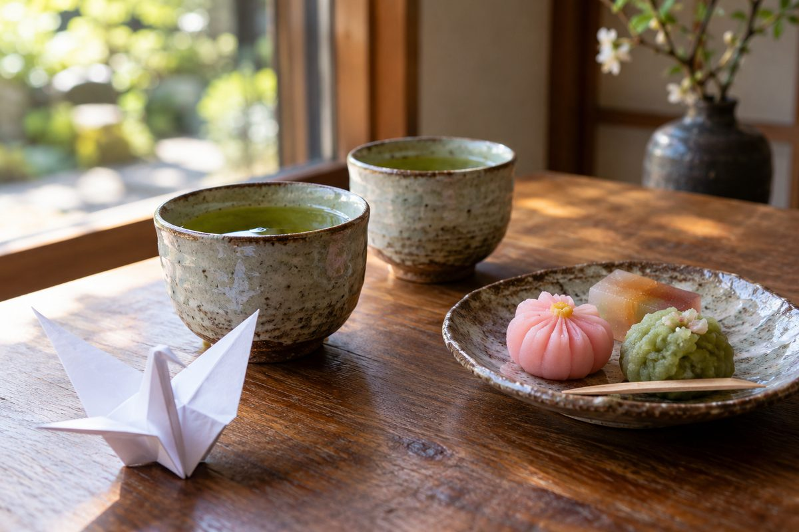
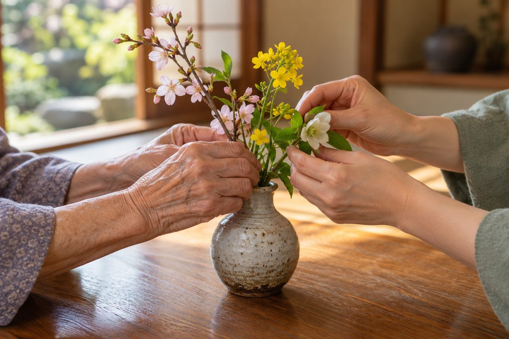

ある一日
のきしたの一日
日によって、順番や内容が変わることがあります。
- 9:00
お迎え
みどりの車で、順番にお迎えにうかがいます。
- 9:30
到着・お茶・体調の確認
お茶を飲みながら、体温や血圧をはかります。
- 10:00
お風呂
順番にご案内します。入らない日は、ゆっくりお過ごしください。
- 11:30
体操
いすに座ったまま、からだを動かします。
- 12:00
お昼ごはん
みんなで同じ机を囲んで、いただきます。
- 13:00
ひと休み・好きなこと
お昼寝、おしゃべり、手作業、ゲームなど。
- 15:00
おやつ
お茶とおやつで、ひと息。
- 15:45
お送り
16:15ごろまでに、ご自宅へお送りします。

見本用の AI 画像（実際の施設ではありません）
見本用の AI 画像（実際の施設ではありません）サービスの内容
のきしたで、できること
送迎
〇〇市内は、車でお迎え・お送りします。乗り降りの場所や、市外の方はご相談ください。
体調の確認
来られたときに、体温・血圧などをはかります。いつもと様子が違うときは、ご家族にご連絡します。
お風呂
手すりのある浴室です。お一人おひとりの計画に沿って、できない所をお手伝いします。
お昼ごはん・おやつ
お昼ごはんと、午後のおやつがあります。食べやすさのご希望はご相談ください。
体操・好きなこと
いすに座ってできる体操のほか、手作業やおしゃべりなど、それぞれのペースで過ごします。
ご家族とのやりとり
その日の様子のお伝えのしかたは、ご家族とご相談して決めます。気になることは、お電話ください。
※写真は見本用に AI で作った物です（実際のご依頼では、お客様の写真を使います）。
見学・ご相談
まずは、見学だけでも
まずは、見学だけでも
大丈夫です。
ご本人・ご家族・ケアマネジャーの方、どなたからのお電話でもどうぞ。
ご都合のよい日時をお知らせください。
000-0000-0000
お電話の受付 月〜土（日曜・年末年始はお休み）